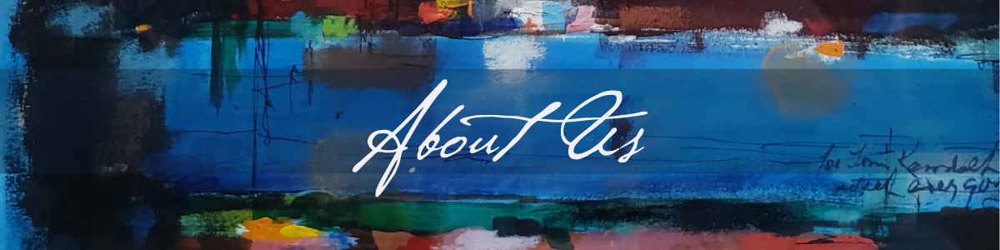

Launched in July 2021, the Texas Art Project is collaboration between Linda and William Reaves, scholars and collectors of Texas art, and the Texas A&M University Art Galleries, under the leadership of Director Catherine Hastedt.
The Texas Art Project embraces the land-grant mission of the university to enhance the lives of Texans. It creates opportunities for students, faculty, collectors, arts professionals, and communities across the state to engage with rich heritage of Texas art through exhibitions, programming, and research initiatives.
Read more about the Texas Art Project and its exhibitions on the University Art Galleries website.
To further its mission to promote Texas art and culture, the Texas Art Project is partnering with the Center of Digital Humanities Research, or CoDHR (pronounced “coder”), and the College of Performance, Visualization & Fine Arts (PVFA) at Texas A&M University. Together, they are creating web-based research and teaching resources on the history of Texas art. The E.M. “Buck” Schiwetz Web Companion is the first of these projects.
Special thanks to the Texas A&M University Libraries, especially Mark Baggett, Corina Barr, Sean Buckner, and Krista Oldham.
The Schiwetz Web Companion launched in September 2023 to accompany the exhibition The Artistic Legacy of Buck Schiwetz at the J. Wayne Stark Galleries at Texas A&M University (Sept 21–Dec 16). The exhibition, the sixth produced by the Texas Art Project, highlights the life and work of Edward Muegge “Buck” Schiwetz (1898–1984), an architectural draftsman, commercial artist, and award-winning fine artist who graduated from A&M’s architecture program in 1921. The curation draws on the scholarship of Linda and William Reaves, whose book The Artistic Legacy of Buck Schiwetz was published by Texas A&M University Press in June 2023.
The Web Companion reimagines the exhibition and book in ways that leverage the power of the digital humanities. A selection of 134 artworks from across Schiwetz’s career can be searched and filtered by a variety of key themes as well as navigated by an interactive timeline and set of maps.
Special thanks to the Estate of Buck Schiwetz and to the private and public collectors who granted permission to feature Schiwetz’s artworks on the Web Companion.